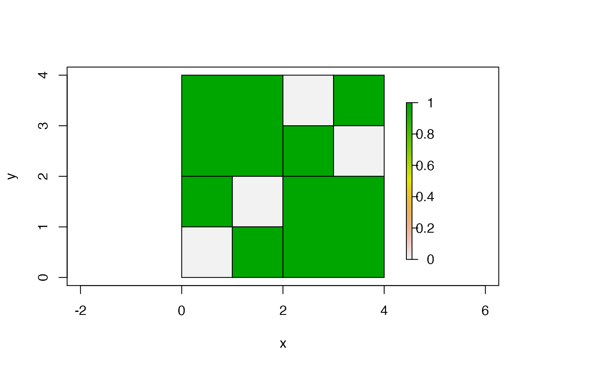

Creates a data frame with information on each quadtree cell.
# S4 method for Quadtree as_data_frame(x, terminal_only = TRUE)
| x | a |
|---|---|
| terminal_only | boolean; if |
A data frame with one row for each quadtree cell. The columns are as follows:
id: the id of the cell
hasChildren: 1 if the cell has children, 0 otherwise
level: integer; the depth of this cell/node in the quadtree,
where the root of the quadtree is considered to be level 0
xmin, xmax, ymin, ymax: the x and y
limits of the cell
value: the value of the cell
smallestChildLength: the smallest cell length among all of this cell's
descendants
parentID: the ID of the cell's parent. The root, which has
no parent, has a value of -1 for this column
as_vector() returns all the cell values as a numeric
vector.
library(quadtree) mat <- rbind(c(1, 1, 0, 1), c(1, 1, 1, 0), c(1, 0, 1, 1), c(0, 1, 1, 1)) qt <- quadtree(mat, .1) plot(qt)as_data_frame(qt)#> id hasChildren level xmin xmax ymin ymax value smallestChildLength parentID #> 2 1 0 1 0 2 2 4 1 2 0 #> 4 3 0 2 2 3 3 4 0 1 2 #> 5 4 0 2 3 4 3 4 1 1 2 #> 6 5 0 2 2 3 2 3 1 1 2 #> 7 6 0 2 3 4 2 3 0 1 2 #> 9 8 0 2 0 1 1 2 1 1 7 #> 10 9 0 2 1 2 1 2 0 1 7 #> 11 10 0 2 0 1 0 1 0 1 7 #> 12 11 0 2 1 2 0 1 1 1 7 #> 13 12 0 1 2 4 0 2 1 2 0